|
|
|
About
the tides
what causes them?
updated
Nov 2019
if you
learn only 3 things about them ...
 The
tide height is not the same every day. The
tide height is not the same every day.
Low spring tides in Singapore usually happens before sunrise
or after sunset.
Low
spring tides happen near the new and full moon. |
|
Our shores
are submerged most of the time. Safe and wet underwater, amazing
plants and animals live out their lives unseen.
The non-diver and casual visitor can only have a 'dry' and easy
view of this rich intertidal zone when it is exposed during low
spring tides.
The lower the tide, the larger the expanse of shore that is exposed.
The coastal area affected by the tides is called the intertidal
zone.
Isn't there a low tide every day? Yes, it's true, there is a 'low' tide every day. Singapore has two
low tides and two high tides a day. The height of the tide is not
the same every day. High and low tides do not happen at the same
time every day, and the highest and lowest tide level change every
day.
What affects the tides? Among
the factors that can affect tide height are:
- Gravitational
pull of the moon.
- Gravitational
pull of the sun (although much further away, the sun is gianormous).
- The rotation
of the earth (the way your laundry in a spinning washing machine
moves outwards).
Spring
Tides: During a full moon or new moon, the moon and sun
are lined up. Their combined gravitational effect results in an
extra high and extra low tide. This is called a spring tide because
the water appears to spring up.
Neap Tides: At a quarter moon or three-quarter moon, the sun's gravity works
at right angles to that of the moon. This results in a smaller difference
in height between the low and high tide. This is called a neap tide.
There's an animation
of the tides on the NOAA website.
What's so special about a low spring tide? During a super low tide, we can get a quick glimpse of a part of
the shore that is seldom exposed. Also, usually a larger area of
the shore is exposed, since the low tide is a lot lower. So there
is more to see in terms of variety and area uncovered. But remember
the 'spring' part of this low tide: so the tide moves fast and the
window of low tide is usually short, about an hour at most. Guided
walks on our shores are usually held during low spring tide.
|
| Changing
views of Chek Jawa
as the tide falls to a low spring tide. |
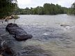 |
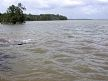 |
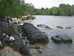 |
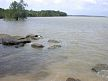 |
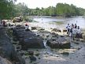 |
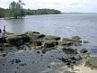 |
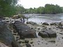 |
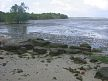 |
|
|
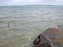 |
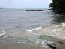 |
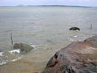 |
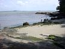 |
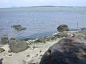 |
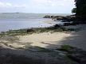 |
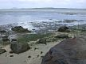 |
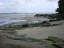 |
|
In the photo of the natural shore of Sentosa (below) at low
spring tide, you can see the mid-water mark as the dark portion
on the natural cliffs. The area exposed at low spring tide is quite
different from that at higher tides. It can also be dangerous to
go at the wrong tide, or to be unaware of the turning tide as you
might get trapped.
|
 |
Not all shores can be visited at the same tide level. Some shores
in Singapore require lower tides than other shores for a safe and
enjoyable visit. A shore with a gentle gradient means a larger area
is affected by the tides resulting in a wider intertidal zone that
can be explored for a longer time during low tide. While a steeper
sloping shore means there is a narrower intertidal zone which is
not exposed for long during low tide.
It's thus important to go
with experienced people and with shore guides. You will be safer,
and also see and learn more about our shores. Here's more
about preparing to visit our shores.
Other things to note about our tides: In Singapore, spring tides usually occur over a few days twice a
month and usually for only a few hours each time. The low spring
tide usually happens before sunrise around April to August (at about
2-3am), and then after sunset in October to February. Often, there
are no low spring tides in September and in March.
Low spring tides don't necessarily happen on weekends.
Low tides don't happen at the same time every day. This is because
the moon takes more than 24 hours to go around the Earth. So the
low (and high) tide shifts by about 50 minutes every day.
The tides can differ from predictions depending on the winds (which
can raise water levels) and the barometric pressure (the pressure
of the miles of atmosphere on the sea level).
If we go at a neap tide, will we see nothing? There is always something to see on our shores at any tide. For
example, on rocky shores, the mangroves and coastal forests.
High tide is when you are most likely to see fascinating animals
such as otters, crocodiles, sea
turtles, fishes and more. See the Adventures
with the Naked Hermit Crabs blog for some sightings during their
free Chek Jawa boardwalk tour which is conducted at any tide. Here
more FAQs
about visiting our shores. |
|
Online
tide tables for Singapore
Links
|
|
|